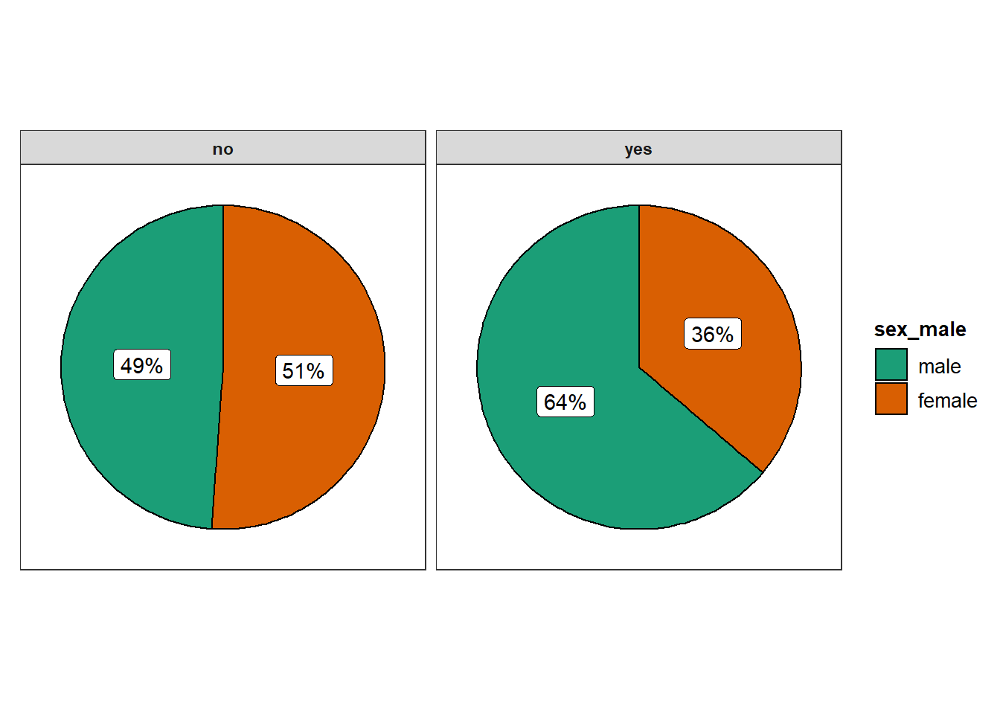
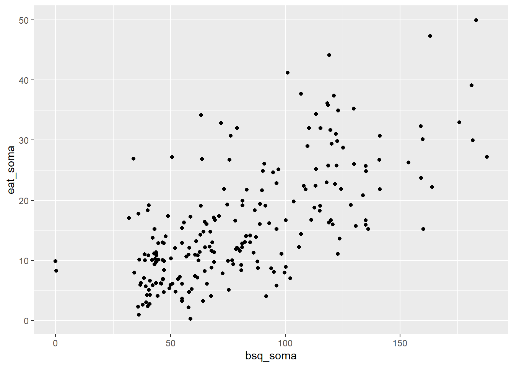

Capítulo 10 Correlação
A análise de correlação é um procedimento estatístico para verificar a relação entre duas variáveis. Existem diferentes formas para realizar tal análise e a maioria busca medir a força e a direção da associação linear entre duas variáveis aleatórias. A tabela a seguir descreve alguns dos métodos.
| Nível de medida | Correlação / Coeficiente |
|---|---|
| Intervalar | Correlação Produto momento de Pearson |
| Ordinal | Correlação de Spearman |
| Nominal | Coeficiente Phi |
A Correlação de Pearson é apresentado por \(\rho\) ou r, é uma das mais frequentemente calculadas em Psicologia e será demonstrada neste capítulo. Entretanto, tenha em mente que algumas áreas específicas costumam utilizar outras correlações. Como exemplo, é bem típico em Psicometria utilizar indicadores categóricos e, com isso, realizar correlações tetracóricas ou policóricas, o que não será abordado aqui.
O coeficiente de correlação é formado por um valor numérico e um sinal e o gráfico de dispersão é uma excelente forma de apresentar o relacionamento bivariado. A tabela abaixo descreve as possíveis interpretações (Cohen 1988)
| Valor/ Sinal | Positivo (+) | Negativo (-) |
|---|---|---|
| 0.1 | Fraca positiva | Fraca negativa |
| 0.3 | Moderada positiva | Moderada negativa |
| 0.5 | Forte positiva | Forte negativa |
As imagens abaixo demonstram tais conceitos.
grid.arrange(
ggplot(data = data.frame(MASS::mvrnorm(n=200, mu=c(0, 0), Sigma=matrix(c(1, .1, .1, 1), nrow=2), empirical=TRUE)),
aes(x = X1, y = X2)) + geom_jitter() + labs(x= "", y = "Y") +
geom_text(aes(label=paste("r=+0.1 - fraca")), x=-Inf, y=Inf, hjust=-0.2, vjust=1.2),
ggplot(data = data.frame(MASS::mvrnorm(n=200, mu=c(0, 0), Sigma=matrix(c(1, .3, .3, 1), nrow=2), empirical=TRUE)),
aes(x = X1, y = X2)) + geom_jitter() + labs(x= "X", y = "") +
geom_text(aes(label=paste("r=+0.3 - moderada")), x=-Inf, y=Inf, hjust=-0.2, vjust=1.2),
ggplot(data = data.frame(MASS::mvrnorm(n=200, mu=c(0, 0), Sigma=matrix(c(1, .5, .5, 1), nrow=2), empirical=TRUE)),
aes(x = X1, y = X2)) + geom_jitter() + labs(x= "", y = "") +
geom_text(aes(label=paste("r=+0.5 - forte")), x=-Inf, y=Inf, hjust=-0.2, vjust=1.2),
ggplot(data = data.frame(MASS::mvrnorm(n=200, mu=c(0, 0), Sigma=matrix(c(1, -.1, -.1, 1), nrow=2), empirical=TRUE)),
aes(x = X1, y = X2)) + geom_jitter() + labs(x= "", y = "Y") +
geom_text(aes(label=paste("r=-0.1 - fraca")), x=-Inf, y=Inf, hjust=-0.2, vjust=1.2),
ggplot(data = data.frame(MASS::mvrnorm(n=200, mu=c(0, 0), Sigma=matrix(c(1, -.3, -.3, 1), nrow=2), empirical=TRUE)),
aes(x = X1, y = X2)) + geom_jitter() + labs(x= "X", y = "") +
geom_text(aes(label=paste("r=-0.3 - moderada")), x=-Inf, y=Inf, hjust=-0.2, vjust=1.2),
ggplot(data = data.frame(MASS::mvrnorm(n=200, mu=c(0, 0), Sigma=matrix(c(1, -.5, -.5, 1), nrow=2), empirical=TRUE)),
aes(x = X1, y = X2)) + geom_jitter() + labs(x= "", y = "") +
geom_text(aes(label=paste("r=-0.5 - forte")), x=-Inf, y=Inf, hjust=-0.2, vjust=1.2),
nrow = 2)
Para realização da Correlação de Pearson, é necessário que ambas as variáveis sejam contínuas e apresentem relacionamento linear. As seguintes propriedades existem no coeficiente de correlação:
- É limitado entre -1 e +1, com 0 indicando ausência de correlação
- O sinal indica a natureza, enquanto o número a força
- É simétrico, ou seja, r(x,y) = r(y,x)
- É adimensional e invariante em transformações lineares
- Sensível aos outliers
- Não indica causalidade
10.1 Pesquisa
Base: Livro - Dados - Eating disorders
Vamos utilizar a pesquisa intitulada “Aspects Related to Body Image and Eating Behaviors in Healthy Brazilian Undergraduate Students”, publicada em 2018 no Global Journal of Educational Studies, que sou co-autor.
O objetivo dessa pesquisa foi explorar os fatores envolvidos em transtornos alimentares e aspectos da percepção da imagem corporal, bem como verificar a capacidade que uma medida possuia em predizer os resultados de outra. Esse artigo contou com a utilização de escalas aplicadas em 219 participantes no Brasil. Para acessar aspectos relacionados aos Transtornos alimentares, a escala EAT-26 foi aplicada. Para verificar aspectos da imagem corporal, a escala BSQ-34 foi aplicada.
Segue abaixo uma tabela inicial com dados descritivos dos resultados.
dados_brasil %>%
select(sexo,eat_soma, bsq_soma, imc, faz_esporte, familia_esporte) %>%
psych::describeBy(.,group = "sexo") %>% pander::pander()## Warning in pander.default(.): No pander.method for "psych", reverting to
## default.No pander.method for "describeBy", reverting to default.1:
Table continues below vars n mean sd median trimmed mad sexo 1 126 1 0 1 1 0 eat_soma 2 126 18.48 10.09 17 17.9 11.86 bsq_soma 3 126 94.17 34.87 91 92.64 40.77 imc 4 124 22.58 3.151 21.95 22.24 2.542 faz_esporte 5 126 0.4524 0.4997 0 0.4412 0 familia_esporte 6 126 0.4762 0.5014 0 0.4706 0 min max range skew kurtosis se sexo 1 1 0 NA NA 0 eat_soma 0 47 47 0.4929 -0.5091 0.8988 bsq_soma 32 182 150 0.3512 -0.4573 3.107 imc 16.85 32.87 16.02 0.9764 0.8725 0.2829 faz_esporte 0 1 1 0.1891 -1.98 0.04452 familia_esporte 0 1 1 0.09421 -2.007 0.04467 2:
Table continues below vars n mean sd median trimmed mad sexo 1 93 2 0 2 2 0 eat_soma 2 93 12.65 8.189 11 11.55 5.93 bsq_soma 3 93 64.24 32.87 55 59.32 19.27 imc 4 90 24.1 3.99 23.41 23.65 2.829 faz_esporte 5 93 0.3978 0.4921 0 0.3733 0 familia_esporte 6 92 0.4783 0.5023 0 0.473 0 min max range skew kurtosis se sexo 2 2 0 NA NA 0 eat_soma 1 50 49 1.688 4.262 0.8491 bsq_soma 0 188 188 1.504 2.799 3.408 imc 17.56 39.21 21.66 1.269 2.073 0.4206 faz_esporte 0 1 1 0.4107 -1.851 0.05103 familia_esporte 0 1 1 0.08562 -2.014 0.05236
10.2 Execução no R
Inicialmente, a escrita da hipótese é:
\[H_0: \rho_{(x,y)} = 0 \\ H_a = \rho_{(x,y)} \neq 0 \\ \alpha = 0.05\]
O gráfico de dispersão auxilia na visualização da relação entre as variáveis e permite verificar se o relacionamento é ou não linear.
ggplot(dados_brasil, aes(x = bsq_soma, y = eat_soma)) +
geom_jitter() +
labs(x = "Resultados da Escala BSQ-34", y = "Resultados da Escala EAT-26",
title = "Correlação entre o BSQ-34 e o EAT-26") O gráfico indica que as duas variáveis são relacionadas. Apesar do padrão deste relacionamento não ser estritamente linear, é possível verificar formalmente a correlação entre ambas as variáveis,
##
## Pearson's product-moment correlation
##
## data: dados_brasil$eat_soma and dados_brasil$bsq_soma
## t = 13.523, df = 218, p-value < 2.2e-16
## alternative hypothesis: true correlation is not equal to 0
## 95 percent confidence interval:
## 0.5964405 0.7414562
## sample estimates:
## cor
## 0.6754262Os resultados permitem concluir que a correlação é positiva e forte (r = 0.675), além de significativa (p < 0.001). Isso indica que ambas as variáveis covariam de maneira proporcional, em que valores altos tendem a acompanhar valores altos em outra. É importante atentar que esse relacionamento não indica causalidade e, dessa forma, essa covariação pode ser explicada por diferentes fatores não analisados neste método.
Como escrever os resultados
A correlação entre o comportamento alimentar (EAT-26) e a percepção corporal (BSQ-34) foi calculada pelo Coeficiente Produto-Momento de Pearson. Os resultados concluíram que existe uma correlação positiva, forte e significativa entre ambas as variáveis (r = 0.675, p < 0.001), indicando que as duas variáveis covariam de maneira proporcional.
10.3 Resumo
- O termo correlação diz respeito a um conjunto de métodos que visa verificar a direção e a força do relacionamento entre duas variáveis
- A correlação de Pearson assume que ambas as variáveis são linearmente correlacionadas
3, O coeficiente sempre indicará a direção (por um sinal) e a força (por um número entre -1 e +1) do relacionamento bivariado
- Correlação não indica causalidade
References
Cohen, Jacob. 1988. Statistical Power Analysis for the Behavioral Sciences. Routledge. https://doi.org/10.4324/9780203771587.